互动叙事 / 资源决策
片场失控
把片场的意外，变成玩家的选择。
走进《最后一次告别》的 2D 片场，扮演现场导演。与演员和剧组互动，在时间、预算、表演与成片质量之间做出取舍。
2D 原型：重逢篇 · 5 个事件 · 约 3–5 分钟
策划重点：将影视制作中的资源冲突转化为选择，通过角色互动、场景变化、拍摄演出与导演风格结算，呈现每次决定的影响。
浏览器直接游玩 · 支持电脑与手机
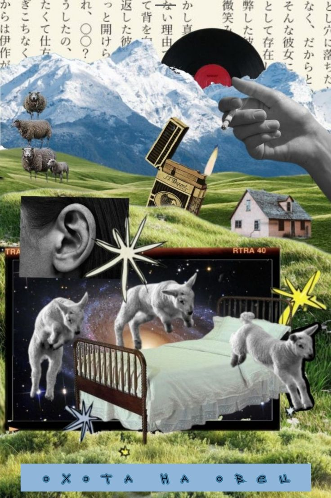
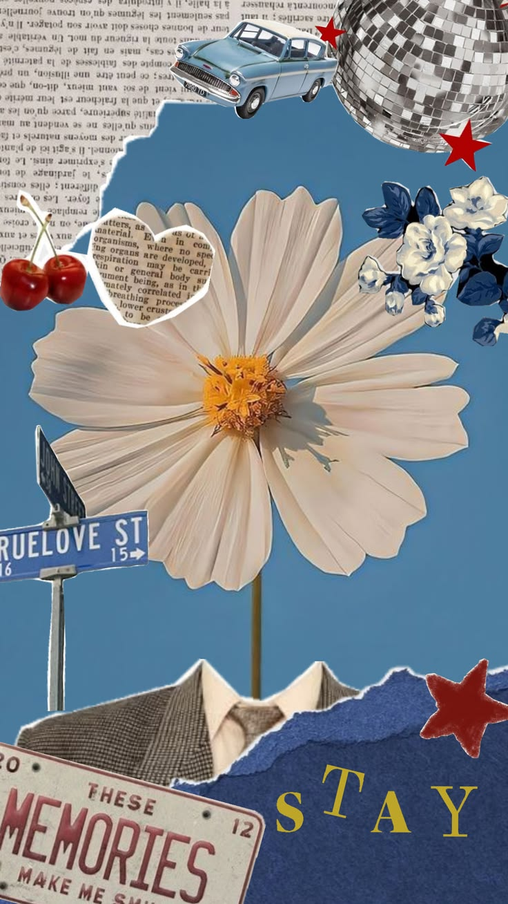
持续整理中
互动叙事 / 资源决策
把片场的意外，变成玩家的选择。
走进《最后一次告别》的 2D 片场，扮演现场导演。与演员和剧组互动，在时间、预算、表演与成片质量之间做出取舍。
2D 原型：重逢篇 · 5 个事件 · 约 3–5 分钟
策划重点：将影视制作中的资源冲突转化为选择，通过角色互动、场景变化、拍摄演出与导演风格结算，呈现每次决定的影响。
浏览器直接游玩 · 支持电脑与手机
左右滑动，浏览视频作品
游戏博主的游戏解说视频
游戏博主的游戏解说视频
担任编导的视频作品
担任编导的视频作品
担任编导的视频作品
担任编导的视频作品
节选展示，非完整作品
开场氛围与人物调度 · 选取原文第 1、2 页（共 15 页）
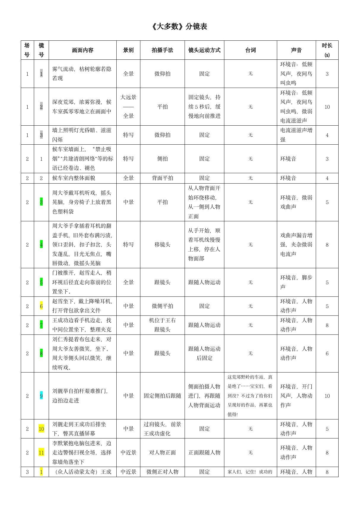
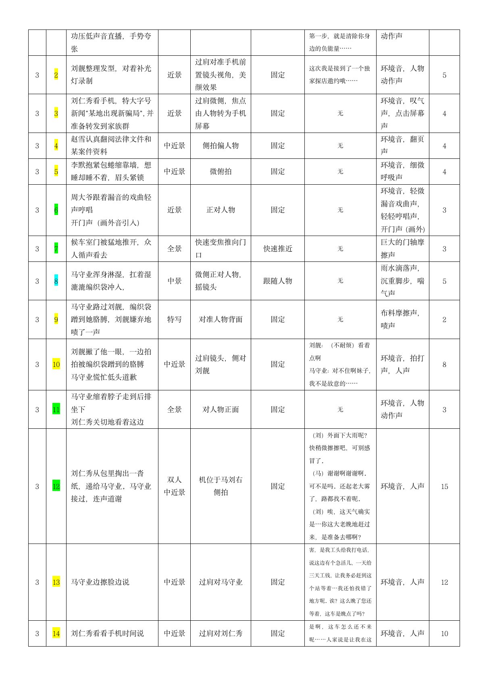
节选展示，非完整作品
冲突建立与人物对白 · 选取原文第 4、5 页（共 14 页）
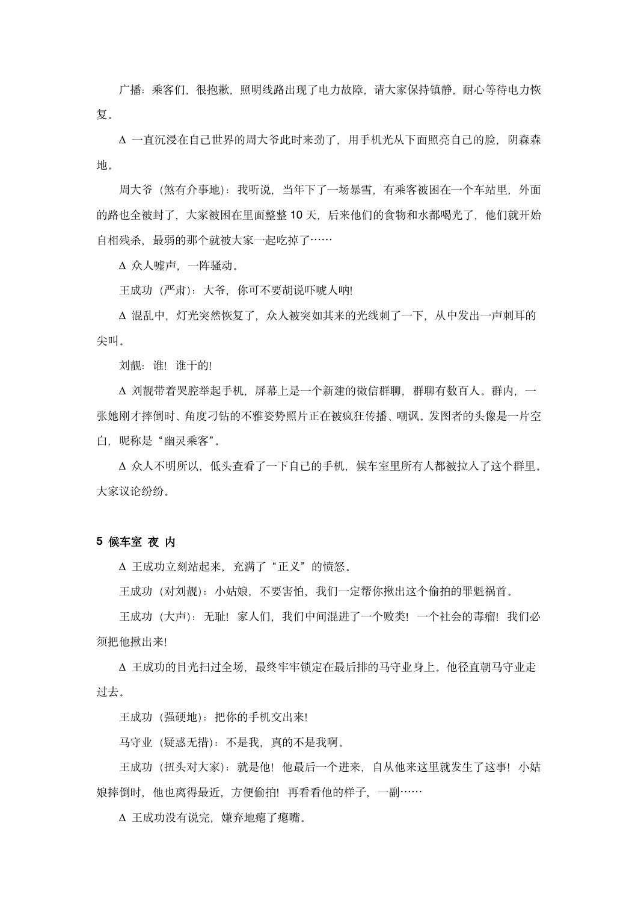
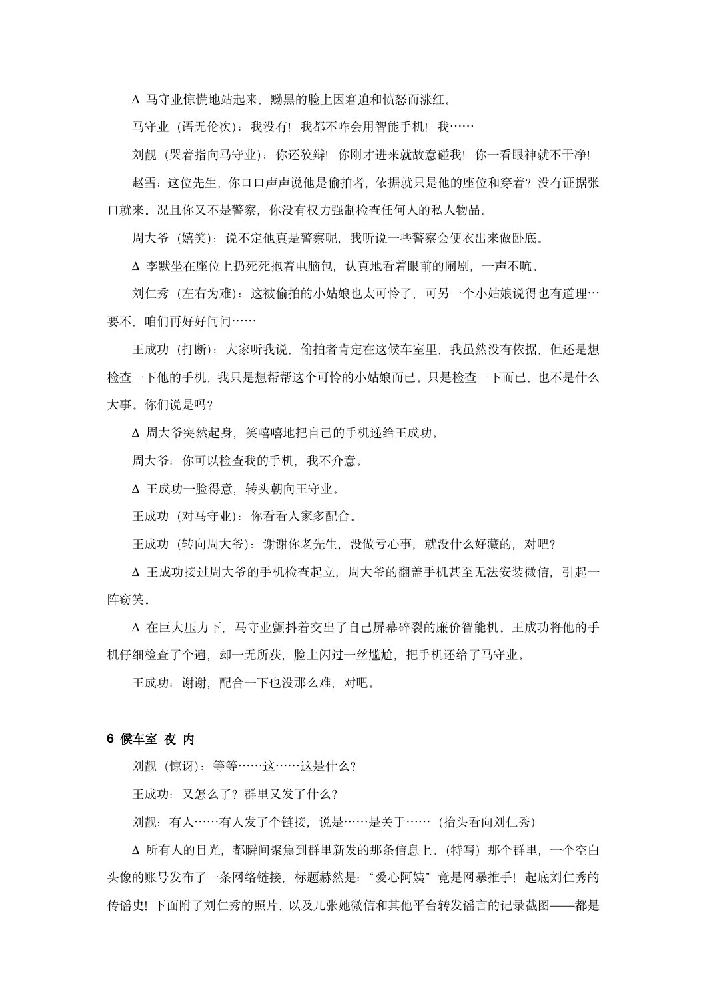
节选展示，非完整作品
开场剧本与视频提示词示例 · 选取原文第 1、2、9 页（共 37 页）
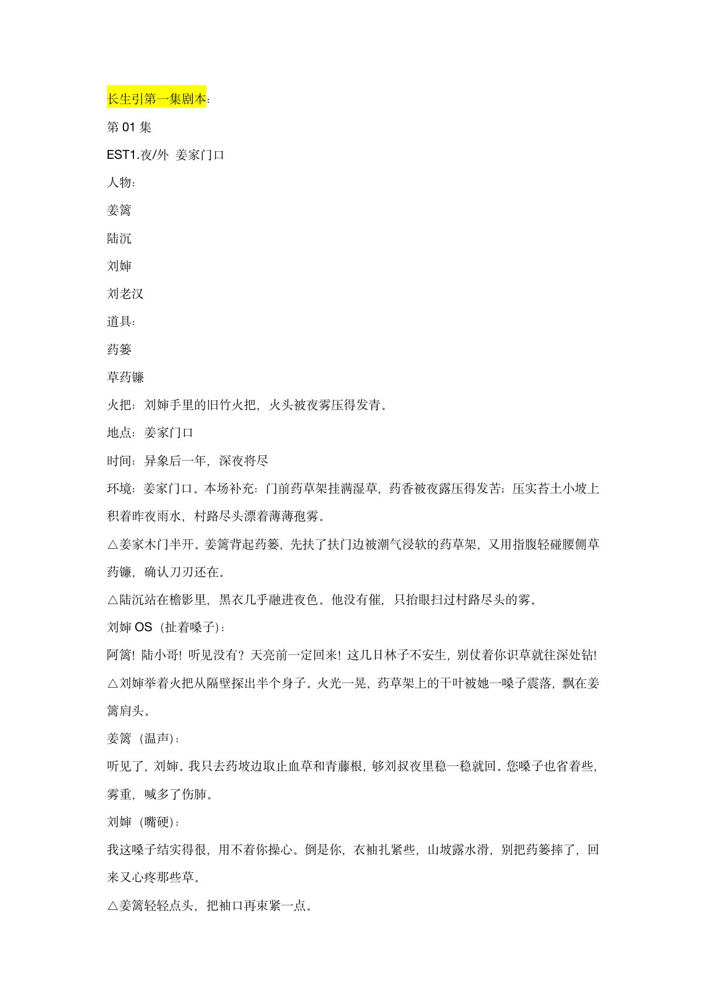
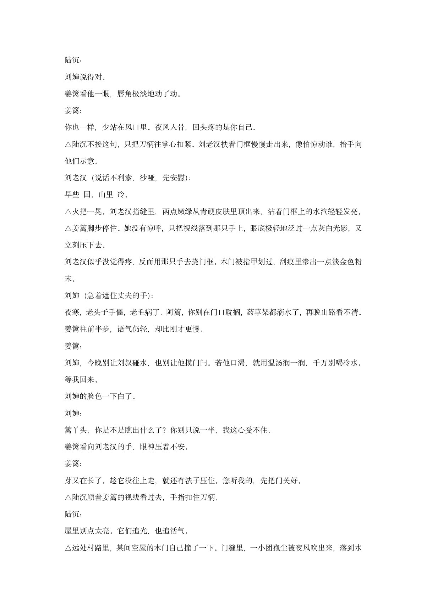
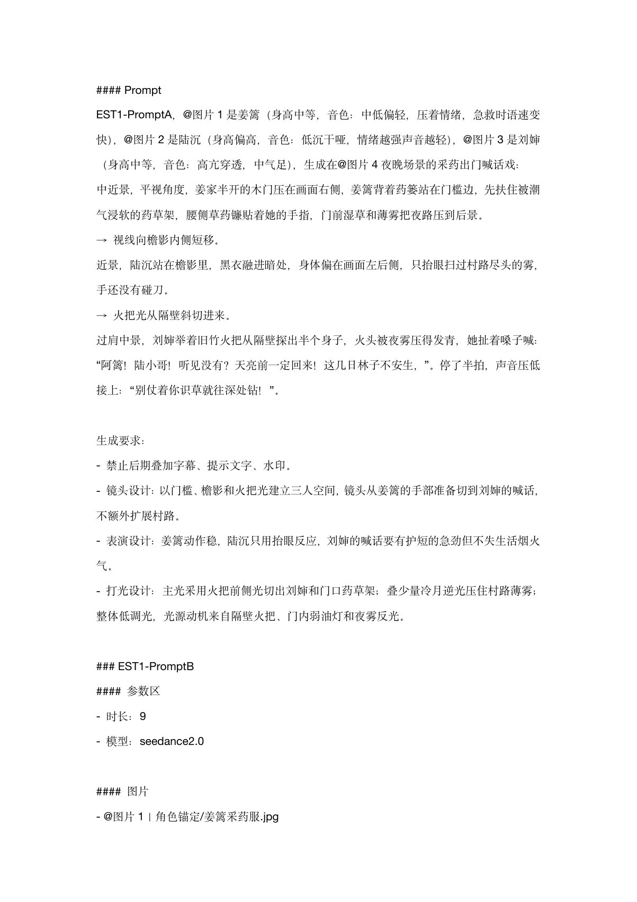
节选展示，非完整作品
世界观架构与主要人物设定 · 选取原文第 1、3 页（共 4 页）
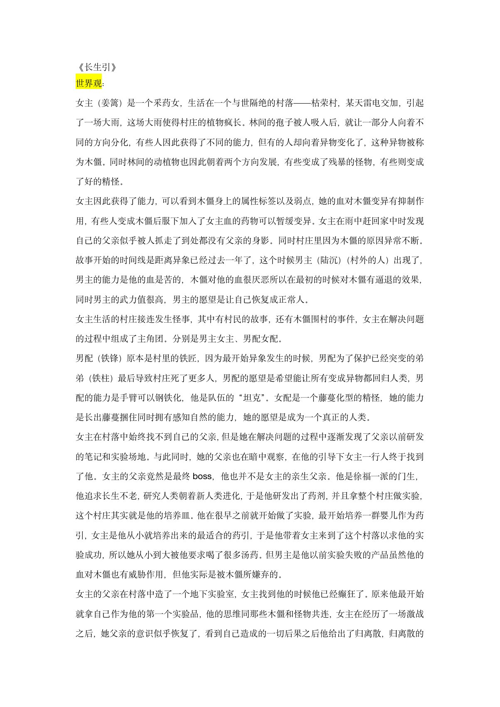
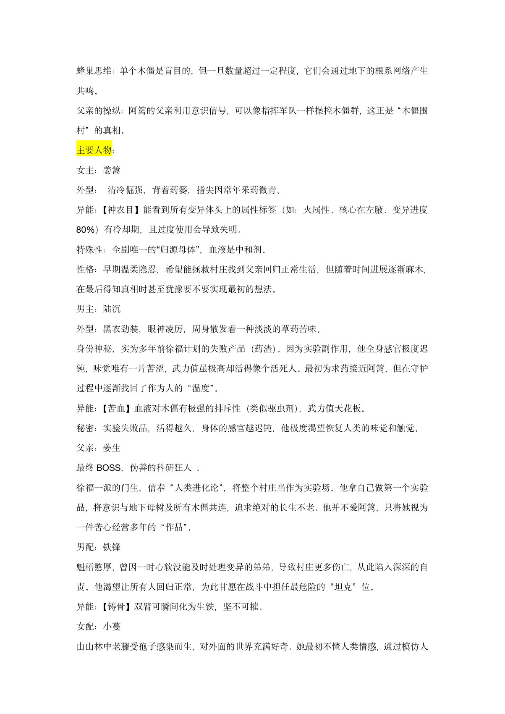
你好，我是 Lucia。
我对很多东西都保持着兴趣：电影、音乐、游戏、故事、人物，以及那些很难被准确说清楚，却会让人突然产生共鸣的瞬间。
我始终相信，好的内容不一定需要宏大的表达。一个真实的人物、一点细微的情绪、一次恰到好处的互动，都可能让人记住很久。
希望这里不只是一个作品的陈列柜，也能慢慢成为属于我的一小块创作空间。
LET'S CONNECT